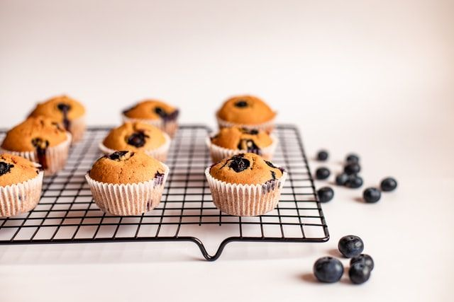

Muffins aux bleuets
Préparation: 10 minutes
Cuisson: 25 minutes
Portions:
Ingrédients
-
0.67 t de sucre

-
1 gros oeuf
-
0.5 t d'huile végétale
-
0.33 t de lait
-
1 c. à thé d'extrait de vanille
-
1.25 t de farine
-
1 c. à thé de poudre à pâte
-
0.25 c. à thé de sel
-
0.5 t de crème sure
-
1 t de bleuets